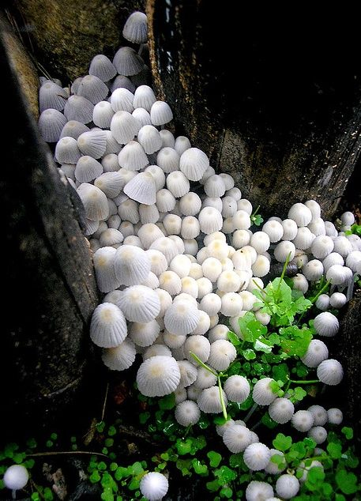
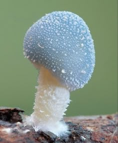
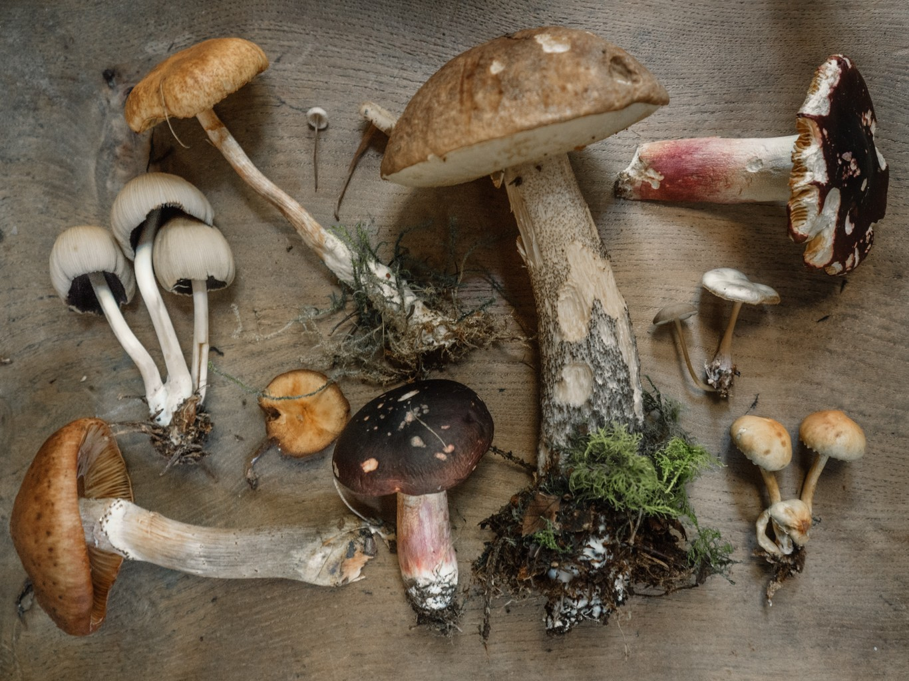
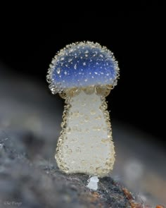
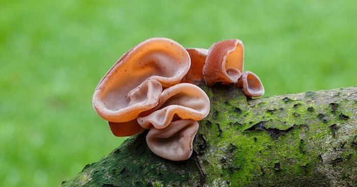
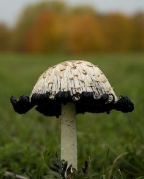
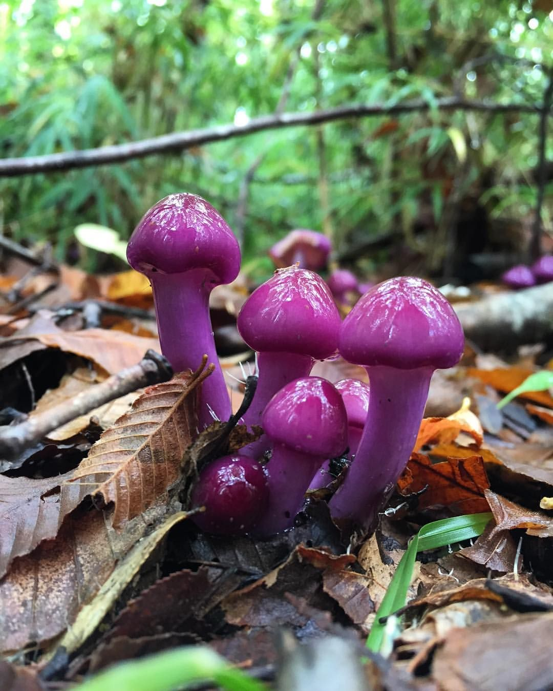
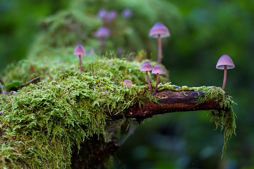
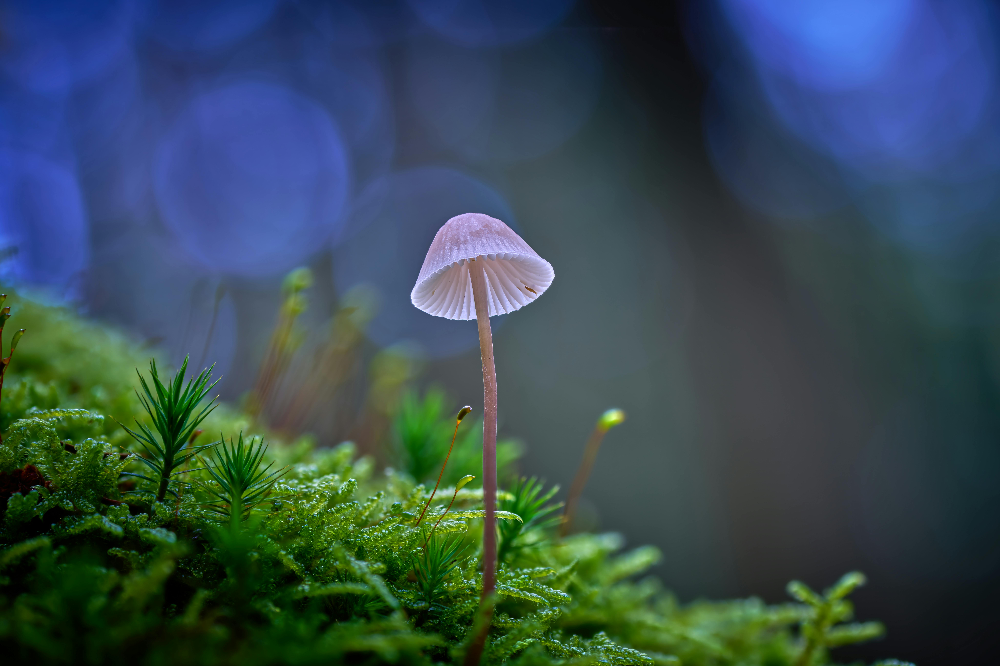

Antes de nada queremos aclarar que las clases aquí descritas son una orientación para un mayor conocimiento en cuanto a una compra en establecimientos regulados de hongos y setas. No creemos que los datos que aquí aportamos sean suficientes para poder distinguirlos con absoluta certeza en nuestros montes y bosque, ya que la recolección de setas se debe hacer por personas o aficionados especializados que conozcan a la perfección las distintas clases y tipos existentes, ya que consumir un hongo o seta sin estos conocimientos nos puede llevar a una intoxicación grave o incluso puede llegara a ser mortal.
Galería de Imágenes con Filtros CSS
Explora los diferentes efectos de filtro aplicados a cada imagen.








